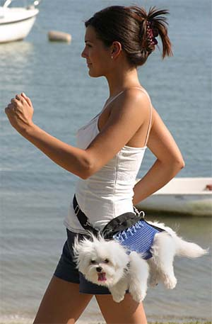
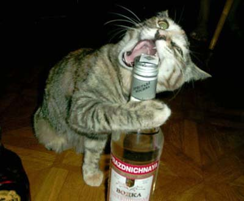
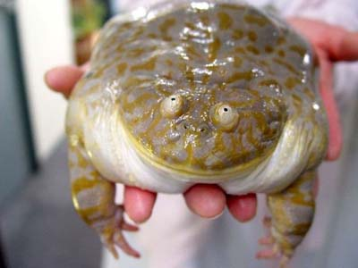
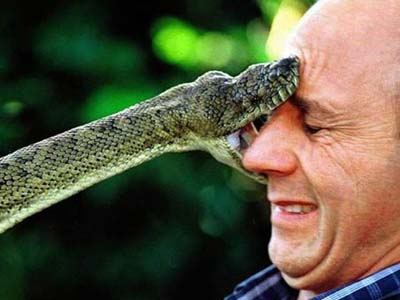
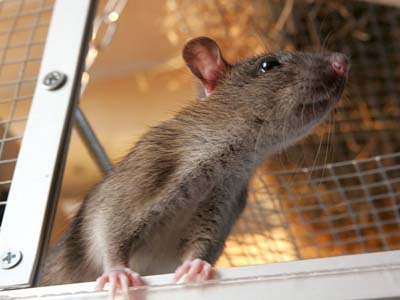
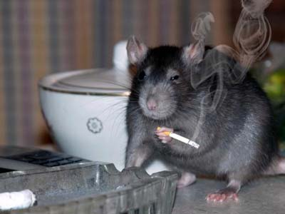

Почему крысы?
«Почему именно крысы?» — нередко слышишь вопрос от обывателей, которые привыкли, что домашними животными обычно являются только кошки и собаки. Ну, еще тараканы — но это несколько другой вопрос.
Действительно, а почему? Понятно, если речь идет о любителях-всей-живности, которые тащат в дом всех подряд — там вопрос ставится в общем виде, а крысы — лишь случайность, частный случай из всего зоопарка. А вот я, скажем, «животных вообще» не люблю (именно «не испытываю любви», а не «терпеть не могу»), это что-то сродни извращению «любить все человечество оптом». А крыс — да, люблю. Они — особенные.
Давайте сравним? Цитирую эссе Kosarex'а «О кошках и собаках» (незначительно сокращено).
«Странные отношения у человека с животными. Игры в уподобление животных людям стали популярными в наши дни. От слов "иди к папочке" или "иди к мамочке", обращенных к кошке или собаке, меня коробит.
Раньше ненормальное очеловечивание домашних животных было больше присуще женщинам. Сейчас за женщинами спешат мужчины. Техника помогает. Постеры с животными, аватарки с животными, видео с животными, игрушки, телеящик. Кажется, они вытеснили книги. Хочется спросить — читали ли любители животных Даррела или Сентона-Томпсона? Наверно, не все. На первом месте лидируют кошки. Кошки изображаются и снимаются во всех видах. Очеловечивание максимально. Иногда их снимают в моменты, когда их поведение максимально напоминает человека, часто ставят при съемке в человеческие позы, используют чучела и куклы кошек. Кажется, ещё чуть-чуть и кошке присвоят все права человека без малейших человеческих обязанностей. Видимо, есть у кошки качества, вызывающие зависть и жажду подражания. Попробую разобраться.
Кошки и собаки приобрели инстинктивное стремление к жизни с человеком. Этот инстинкт подавляется от дикой жизни в городе или на селе. Привыкшие к свободе и помойкам собаки и кошки не всегда приручаются, пытаются сохранить привычки прежней жизни, но в детстве инстинкт жизни с человеком выражен крайне ярко. Котята от кошки, выросшей на улице и не готовой променять помойку на жизнь в квартире, рвутся в дома в поисках хозяев. Любой щенок из бродячей стаи великолепно приручается и не будет пытаться вернуться в стаю. Раньше, пока хватало дикой природы, отбор был жесток. Выжить в лесу, рядом с волками, лисами, рысями, совами кошки и собаки не могли. Безопасное место было рядом с человеком. Не надо ссылаться на случаи успешной жизни диких кошек — сейчас резко сократилось количество сов и крупных соколов. От них на деревьях не спрячешься. Кошки и собаки стремятся именно подлизаться к человеку, причем делают это инстинктивно. Собака пытается лизнуть вас в лицо машинально, инстинкт требует. У кошки инстинкт ещё примитивнее. Голодная кошка может с одинаковым успехом тереться о ваши ноги и о мебель поблизости. Ей даже в голову не приходит, насколько она смешна в этот момент. Организм требует! По ночам собаки и кошки лезут на кровати к хозяевам. Спящий хозяин — символ комфорта и уюта. Я понимаю, все люди становятся лучше, когда они спят. Для животных они настолько хороши, что их не волнует вопрос храпа. Лезут прямо к голове, пока их не сгонишь спросонья. Причем, понимают, что мешают, и быстро вырабатывают привычку спрыгивать с кровати, когда хозяин просыпается и смотреть снизу с невинным видом — не были, не состояли, не участвовали.

У кошки есть особые качества, вызывающие любовь человека. Первое и главное — неприручаемость, инстинктивное ощущение грани, за которой начинается потеря свободы. Это именно инстинкт, а не сознательное поведение. Кошка царапается чисто инстинктивно. Не дает себя погладить, когда ей не нравится, машинально. Она просто не может себя сдерживать. Кошку можно отучить наказанием от ряда скверных привычек, например, от привычки на радостях вонзать когти в тело хозяина или гадить по углам. С дальнейшими успехами возникнут проблемы. Отсюда человеческое восхищение свободолюбием кошачьих. Мы даже не замечаем, как мы тем самым выносим приговор своему обществу. В реальной жизни человек боится и уважает именно тех, кто не приручается, кто даст сдачи или психанет инстинктивно, а не будет вступать в благородную схватку. Есть такой блатной термин — оборзевший, то есть человек, который даст сдачи инстинктивно от того, что нервы на пределе. Оборзевшего бесполезно бить, инстинкт ответа агрессией на агрессию останется. Победа над оборзевшим мало чего дает. Он потом будет мстить, подчиняясь не логике, а инстинкту. Кошка — борзое существо. От сих до сих её можно приручать, дальше начнется сопротивление психики. Конечно, наибольшую зависть у человека вызывает другое великое качество кошек. Кошка инстинктивно ощущает грань допустимого согласия с человеческой волей. Её можно согнать с места, запереть в ванной или на кухне, нагнать на неё страх, но дальше предел.
Человек по сути равен собаке. Его вечно дрессируют с огромным успехом. Человек не замечает, как его дрессируют. Он только инстинктивно завидует котам и презирает собак за подобие человеку в этом качестве. Хотя, честно говоря, собаки в чем-то совершеннее, поскольку хоть на первом этапе им требуется реальное поощрение словом и кусочком чего-то вкусного.
Вот это неспособность кошачьих к обучению создает ещё один предмет зависти у человека. Собака очень похожа на человека в самом главном. Инстинкт любви к хозяину не позволяет понять ей всю степень хозяйской подлости по отношению к ней и окружающим. Недаром христианство так выпячивает идею любви ко всем подряд. Просто подчинить раба недостаточно. Раб должен не понимать всей степени подлости хозяина. Он должен быть эмоционально бессильным к возмущению. Недаром православное богослужение нацелено именно на создание депрессии и потери способности к сильным эмоциям протеста. Собаки не ощущают вся степень подлости хозяина, вместо этого они пропитываются хозяйским отношением к окружающему миру. Говорят, что собака напоминает по поведению хозяина — у подлого и злого человека собака становится подлой и злой, у мирного — мирной, у храброго — храброй, у доброго — доброй. Поэтому у собак столь велико значение чистой породы. Носители чистой породы способны сопротивляться влиянию человека — жестко заданные качества породы мешают полному уподоблению. И недаром в наше время с породой борются. Речь идет не только о борьбе на уровне генетики с чистотой расы или человеческого типа. Борются с аристократическим типом поведения, с наследственными качествами воина, с наследственной порядочностью и так далее. Кошка тоже впитывает качества хозяина, но она обладает большей злопамятностью, то есть способностью понимать цену хозяйским качествам. Правильно она понимает или сугубо эгоистично — другой вопрос. Понимает и этим вызывает зависть. Человек от этого теряется и не понимает всю меру кошачьей трусости. Он привык, что он не имеет право быть злопамятным. Злопамятность — прерогатива власти и людей, претендующих на власть. Обыватель только ощущает, что злопамятность дает человеку власть над собой, а за это можно быть наказанным. Поэтому кошку модно изображать очень храбрым зверем.
Большинство владельцев кошек отлично знают, как кошки боятся всего за пределами квартиры. Ни один щенок не будет дрожать от страха, когда вы его в первый раз поведете на прогулку. Кошка испугается и вцепится когтями вам в одежду. Собака быстро привыкает к шумам за дверью. Кошка часто вздрагивает. Но человеку приятно думать, что такое поведение присуще собаке исключительно из-за смелости, какую собака испытывает от присутствия хозяина. Это неверно, это видно по тому, как быстро осваивается собака на дачном участке, а кошка исследует участок со страхом. Всё равно, кошачья смелость преувеличивается.
 У
кошек есть ещё одно великое качество. Это качество лежит в основе управления
современном миром и оно всегда было в основе управления человеческой стаей.
Кошка способна любить человека искренне. Когда она лезет к вам на кровать и
дрыхнет поверх одеяла, мурлычет на коленях, встречает у двери, играет в
веревочку, изображающую дергающуюся на кончике мышку или просто сидит рядом,
она часто испытывает искреннюю привязанность. Кошка не обязательно любит
только дом и полную миску. Она способна скучать по конкретному человеку,
когда его нет. Все эти качества у кошки присутствуют. Она может вас
оцарапать, когда вы её утомите, но в большинстве случаев она это не
планирует, наивно полагая, что вы сами почувствуете момент и вовремя
отстанете. Есть зловредные кошки, но не все. Однако, кошка — хищник, причем,
хищник специфический. Недаром, наблюдающие за одичавшими кошками откровенно
говорят, что большего хищника трудно сыскать. Кошка нападает практически на
всё живое, что мало и не может оказать сильного сопротивления — мелких птиц,
мышей, землероек, ящериц, птенцов. Только особо крупные и смелые коты готовы
сразиться с крысой и испытать радость победы над противником, способным дать
сдачи. Недаром англичане в конце концов вывели фокстерьеров не только как
породу для охоты на лис, но и крысоловов. Охотничья собака способна пойти на
зверя, который заведомо её сильнее — медведя или кабана. Причем пойдет в
одиночку, понимая всю меру опасности. Если у сторожевой собаки хорошая
генетика, она пойдет на заведомо более сильного, чем она, человека. Фоксу
лиса искусает всю морду, но фокс снова пойдет на лису. Но не это главное.
У
кошек есть ещё одно великое качество. Это качество лежит в основе управления
современном миром и оно всегда было в основе управления человеческой стаей.
Кошка способна любить человека искренне. Когда она лезет к вам на кровать и
дрыхнет поверх одеяла, мурлычет на коленях, встречает у двери, играет в
веревочку, изображающую дергающуюся на кончике мышку или просто сидит рядом,
она часто испытывает искреннюю привязанность. Кошка не обязательно любит
только дом и полную миску. Она способна скучать по конкретному человеку,
когда его нет. Все эти качества у кошки присутствуют. Она может вас
оцарапать, когда вы её утомите, но в большинстве случаев она это не
планирует, наивно полагая, что вы сами почувствуете момент и вовремя
отстанете. Есть зловредные кошки, но не все. Однако, кошка — хищник, причем,
хищник специфический. Недаром, наблюдающие за одичавшими кошками откровенно
говорят, что большего хищника трудно сыскать. Кошка нападает практически на
всё живое, что мало и не может оказать сильного сопротивления — мелких птиц,
мышей, землероек, ящериц, птенцов. Только особо крупные и смелые коты готовы
сразиться с крысой и испытать радость победы над противником, способным дать
сдачи. Недаром англичане в конце концов вывели фокстерьеров не только как
породу для охоты на лис, но и крысоловов. Охотничья собака способна пойти на
зверя, который заведомо её сильнее — медведя или кабана. Причем пойдет в
одиночку, понимая всю меру опасности. Если у сторожевой собаки хорошая
генетика, она пойдет на заведомо более сильного, чем она, человека. Фоксу
лиса искусает всю морду, но фокс снова пойдет на лису. Но не это главное.
Кошка — особый хищник. Она куда больше стремится насладиться мучениями жертвы. У меня давным-давно был скотч, причем он был довольно храбрым и решительным. У него был инстинкт как у боксера на ринге или хорошего футболиста — не отворачиваться, а идти в стык, морда в морду, зуб в зуб. Было дело, поймал он пару мышей. Один укус, и мышь мертва. Поймать было просто — ранней весной снег в парке подтопило, и мыши были вынуждены бегать по насту. Зато кот у мамы ловит мышей иначе. Он именно наслаждается мучениями жертвы, и это возбуждает ему аппетит. В этом он подобен многим людям. Люди это скрывают, а кошки перед хозяевами хвастаются.»
Добавлю от себя: конечно, странно антропоморфировать кошек — мол, специально наслаждаются. Инстинкт у них такой, не более того. Но суть-то — именно в восприятии человеком, и выглядит это именно как нарочитое доставление мучений. Смотреть на что равнодушно (и тем более с удовольствием) — для человека психологически ненормально.
Можно и по аналогии пояснить: ежели некий мужчина смотрит гей-эротику с удовольствием или хотя бы равнодушно, то даже если знает, что актеры — гетеросексуалы, и просто играют роль, то он как минимум — латентный гомосексуалист. Важно восприятие, т.н. психологическая реальность.
«Почему я говорю про управление миром? Тайное или явное наведение страха перед смертью и издевательствами лежит именно в основе религий и далее всего управления миром. Какую религию не возьми, везде эксплуатируется страх перед смертью. Кошка снимает многие подсознательные страхи, если относиться к ней как кошке, а не играть в страх или особое почитание. Сейчас же мы видим как кошки подавляют хозяев, потому что хозяева слишком подавлены современным миром.»
 |
| Я и Лорд (пес отца), приблизительно 2003 г |
Собака в понимании многих — это такой своеобразный «друг человека». Психологически общечеловек считает, что дружба — это не равноправные отношения, а «друг должен помогать». Желательно — без вопросов и по первому намеку. Вот собака обычно и воспринимается как такой «друг», который не может не любить хозяина. Эдакие отношения «хозяин — друг», ага.
Разумеется, это относится именно к общечеловекам, а не ко всем собаководам подряд. Собака — если правильно воспитать — это безусловно преданное существо, но без рабских замашек. Как и гармонично развитый человек по отношению к своим друзьям.
«Собаку воспитывают, с ней договариваются, тогда это будет действительное друг, а не аморфное существо» © zvveter
Нормальные отношения с собакой — это, условно говоря, вассальные. Вполне нормальные отношения.
Я вряд ли когда заведу собаку — не с моим образом жизни. Но в целом собак я уважаю (действительно собак, а не декоративных мосек).

А вот кошки… Kosarex верно заметил, что кошки умеют искренне любить хозяина. Но и собаки — тоже, не так ли? Принципиальная разница в том, что собака любит бескорыстно, а вот кошки всегда «гуляют сами по себе». Собаки — любят, кошки — позволяют любить себя.
В этом они похожи на некоторых женщин, которые действительно искренне влюбляются, излучая эту влюбленность всеми фибрами, но при этом как-то так инстинктивно умудряются влюбляться (и влюблять в себя) исключительно богатых и/или знаменитых мужчин. Мол, «я этого достойна». А потом — делают, что хотят, и хозяин лишь умиляется.
Таких женщин даже сравнивают с кошками — что является сомнительным комплиментом, если подумать. И в самом деле, с чего бы «кошка» — это именно «грациозная хищница», а не «ссущая по углам истеричка»? Не такой уж редкий вариант.
Кошки — это именно паразиты, которые умеют заставить любить себя тех, у кого психика недостаточно проработана в плане защиты.
 На
всякий случай: я не спорю — есть исключения. Замечательные преданные кошки,
которые все такие офигенные и т.д. Возможно, именно они живут именно у вас.
Кроме того, деревенские кошки, которые ловят мышей — это совсем другой
разговор, я именно про городских «домашних любимцев»
На
всякий случай: я не спорю — есть исключения. Замечательные преданные кошки,
которые все такие офигенные и т.д. Возможно, именно они живут именно у вас.
Кроме того, деревенские кошки, которые ловят мышей — это совсем другой
разговор, я именно про городских «домашних любимцев»
Вот только тенденция известна — сравните хотя бы кол-во фото в интернете на тему «умилитесь, какая няка» с кошками и собаками. Смотрите на фото слева — представляете аналогичное фото на тему «глядите, какая у меня замечательная ленивая собака»? Я вот как-то не представляю.
А вот «котэ» (ударение на «э»)… Так и паразитируют.
Скажете, я предвзят, так как не люблю кошек? Ну так я потому и не люблю, что у них — такие вот, описанные выше, свойства. Не подменяйте следствие причиной.
Ладно, перейдем к другим животным. Впрочем, не буду о них писать — кого только не держат дома! Всех не перечислить.
 |
 |
|  |  |
Давайте наконец поговорим про крыс.
У крыс шелковистые теплые хвостики, любопытные глаза, но многие люди почему-то уверены, что хвосты голые, склизкие и холодные, глазки маленькие и злые. Как часто других обвиняют в собственных заблуждениях!
Помните полуанекдот-полупритчу?
 Встретилась
крыса и холеный домашний хомячок. Крыса спрашивает хомяка:
Встретилась
крыса и холеный домашний хомячок. Крыса спрашивает хомяка:
— Почему меня так не любят, травят, ставят ловушки? А ты ведь тоже млекопитающее, грызун, но тебя холят и лелеют?
Хомяк задумчиво что-то пожевал и меланхолично ответил:
— У тебя, крыса, пиар плохой!
Между тем есть те, кто не поддается на штампы, и видит, что крысы — это замечательные домашние животные. А с 2002 года крысоводы сочли, 4 апреля — это World Rat Day, Всемирный День Крыс. Дата взята практически случайно — это день организации англоязычного списка рассылки по крысиной тематике, важно лишь само отношение к крысам.
Честно говоря, в Европе крысам не повезло — общественное мнение ассоциирует их с чумой, которая периодически проходила по Европе. Чума давно побеждена (да и когда свирепствовала — то переносили ее блохи, а не сами крысы), но люди, как уже говорилось, чаще всего мыслят штампами.
Так, очень многие считают, что крысы — грязные и нечистоплотные животные. На самом же деле они умываются и вылизываются чаще, чем кошки, которые традиционно считаются чистюлями.
В других культурах отношение к крысам разительно отличается.
«Хочешь разбогатеть — пригласи в дом крысу!» — гласит японская поговорка. В мифологии Южного Китая крыса принесла человеку главный продукт питания — рис.
Есть легенда, по которой символы зверей, покровительствующих каждому году восточного 12-летнего цикла, назначал сам Великий Будда. На первое место он поставил крысу (которая пришла первой) и объяснил это так: «Крыса маленькая, неприметная, но она сильнее быка, мудрее змеи, коварнее обезьяны и опаснее тигра». Символы знака «крысы» — богатство, преуспевание, процветание.
В Индии бог изобилия и покровитель мудрецов Ганеша имеет ездовым животным крысу, которая олицетворяет дерзание.
Существует даже храм крыс. Грозная Кали, богиня смерти и разрушения, 600 лет назад воплотилась в девушке по имени Карни Мата. Пытаясь спасти некоего ребенка из рук бога смерти Ямы, она временно переселила его душу в крысу. И так ей понравилось оставлять могущественного бога без добычи, что она эту процедуру стала повторять с завидной периодичностью, переселяя души мертвых детей в крыс. В городе, где это происходило, и был основан действующий и поныне храм Карни Мата Мандир.
Пожалуй, самое первое упоминание крыс в положительном ключе — это 40 веков назад, в гимне о путешествии Нанны в Ниппур (Nanna-Suen's journey to Nibru), перевод В. Емельянова.:
Ашимбаббар даст поесть козам храма Энлиля!
Нанна-Зуэн
принесет дикобразов для храма Энлиля!
Ашимбаббар принесет длиннохвостых
крыс для храма Энлиля!
Нанна-Зуэн соберет маленьких птиц-куда для храма
Энлиля!
Энлиль — это верховный общешумерский бог. Вопрос: зачем ему крысы? Насколько известно из многочисленных хозяйственных записей, в рацион шумеров — и тем более их жрецов — крысы (как и дикобразы) не входили. Остается предположить, что это были какого-то рода священные животные. Упоминаются они сразу после разговоров об уходе за храмовыми быками, овцами и козами, т.е. явно полезными для хозяйства животными, и до всяких птиц, карпов, яиц, тростника и прочей снеди. Период записи на табличке старовавилонский (20-17 века до н.э), а сочинение предположительно болеераннее, неошумерское (22-21 века до н.э).
Крысы как домашние животные впервые появились в Англии.
В 1835 г. парламент Великобритании принял закон, запрещающий травлю животных. О крысах в этом законе ничего не было прописано, и вскоре одним из любимейших развлечений британской знати стала травля крыс собаками. Именно эти жестокие способы уничтожения крыс привели к началу их целенаправленного разведения и размножения.
Для соревнований требовались тысячи крыс, поставщиком которых был известный в то время в Англии крысолов Черный Джек, который в середине XIX века стал известен еще и как первый селекционер и заводчик этих животных. Он отлавливал наиболее интересных крыс — здоровых, крупных и необычно окрашенных — и вскоре вывел несколько разновидностей, различавшихся окрасом.
Крысы стали продаваться как домашние животные, их содержали в изящных позолоченных клетках, и даже сама королева Виктория была обладательницей этих животных.
Первая выставка декоративных крыс была организована в начале 1900-х гг. в Англии. С тех пор интерес к выставкам с участием крыс постоянно растет, и на сегодняшний день в разных странах мира есть множество клубов, которые развивают крысоводство и пропагандируют этих любопытных маленьких существ как популярных домашних животных.
И в самом деле, крыса — это идеальное домашнее животное для городских условий.
Собаки требуют прогулок минимум два раза в день, причем первый раз — ранним утром. Если вы относитесь к собаке серьезно (а иначе — зачем заводить?), то ее надо дрессировать.
Еще более распространены кошки — но тут, помимо проблем с котами, которые метят, и кошками, у которых течка, интеллект кошек — куда меньше собачьего (а вот хитрости, которая легко переходит во вредность, предостаточно).
Крысы же — совсем другое дело, они видят в хозяине не повелителя и не обслугу, а считают, образно говоря, большой лысой крысой. Не раболепствуют, и в то же время искренне скучают… Короче говоря, общаются с человеком на равных — и в этом они уникальны.
Крыса — единственное млекопитающее кроме человека и некоторых других высших приматов (причем в лабораторных условиях), которое умеет смеяться! Это недавно доказала группа американских ученых из университета в Боулинг-Гринсе, штат Огайо. А ведь многие ученые считали, что основным отличием человека от животного является не интеллект, а именно умение смеяться.
Крысы общительны и любознательны. Нередко крысы предпочитают пообщаться с человеком, когда он приносит еду, и лишь потом начинают есть. Кошки или собаки в подобном случае однозначно отдают приоритет еде.
 Помимо того, что
крыса обладает всеми «свойствами домашнего любимца», — она умна, с ней можно
общаться, она пушистая, её приятно держать в руках и гладить —
дополнительным преимуществом являются ее малые размеры.
Помимо того, что
крыса обладает всеми «свойствами домашнего любимца», — она умна, с ней можно
общаться, она пушистая, её приятно держать в руках и гладить —
дополнительным преимуществом являются ее малые размеры.
Дело даже не в том, что для малогабаритных квартир это особенно актуально, просто размер позволяет содержать сразу несколько крыс.
Крысы очень разнообразны как по окрасу, так и по характеру — куда более яркие индивидуальности, чем собаки/кошки внутри одной породы.
Крысы — животные очень социальные, для счастливой жизни им необходима компания. У крыс наблюдается куда большее разнообразие характеров, чем у других домашних животных. Очень интересно наблюдать за иерархическими играми, отношениями в крысином коллективе — эдакий миниатюрный социум.
Крысы ведут себя не только как люди, а лучше людей, по крайне мере, по отношению друг к другу, за редким исключением (вот как люди — бывает «не нравишься ты мне, и все тут!»). Наблюдения московского зоолога К.Ляпуновой свидетельствуют о том, что в сообществах серых крыс существует очень целесообразная иерархия животных. Причем отмечается поразительная терпимость взрослых, господствующих в крысином мирке самцов по отношению к подчиненным соплеменникам и особенно к молодым крысятам. Нередко приходится видеть, как грозный глава крысиного подполья добродушно переносит наскоки маленького крысенка. Он даже притворно валится на бок и порой принимает позу подчинения, подставляя «победителю» свое незащищенное брюхо.
В драках крыс-соперников, например, зверьки стараются не пускать всерьез в ход свои мощные резцы. Часто они только боксируют, нанося друг другу безвредные оплеухи передними лапами, пытаясь психологически «задавить» соперника. В более ожесточенных схватках самцы пускают в ход и челюсти, но укусы, как правило, носят характер поверхностных царапин, максимум — рассечение кожи. А вот при драках с кошками и собаками укусы — это глубоко проникающие раны.
Старичков же молодые греют и помогают ухаживать за шерстью.
Крысы — это не «маленькие человечки», как иногда пишут из-за их ловких ручек. Крысы — это крысы. Иные, отличные от людей — но тем и замечательные члены семьи, а не просто «pets», как многие относятся к домашним животным на Западе.
Я, разумеется, не заявляю, что всем надо заводить крыс — но мне искренне жаль тех, кто с криком «крыса!!!» шарахается от этих дружелюбных зверьков.
С другой стороны — у многих есть представление, что крысы — это такие мастера выживания, которые могут жить в любых условиях, питаться чем попало и так далее. Вовсе нет — на улице выживает вид, стая, а не отдельные особи.
О том, что из себя представляют крысы, как правильно за ними ухаживать, содержать и так далее — в дальнейших статьях.
Ymka: «Почему крысы? При небольшом размере, небольших тратах на еду и содержание (речь не о вет. обслуживании), дома ВСЕГДА имеешь позитив, интеллект, живой ум, общение, частенько внимательного слушателя (или даже молчаливого собеседника). Нет надобности ползти гулять в любую погоду и в любом состоянии здоровья. Крыса — идеальное животное для содержания в квартире (и комнате коммуналки). Как ни одно животное, они контролируемы: имеешь возможность — общаетесь досыта. Отсутствуешь или дико занят — зверек в своем домике. При этом, в отличие от собачек и кисок, крыса никогда не устроит погром в доме, пока вас нет дома не сожрет вещи (кроме дозволенных к жранью), не нассыт (пардон) в обувь... Пока все... но плюсов от крысы еще море!»
Ilona: «Для наших условий важно, что крысы не создают проблем соседям.»
rodinad: «Они в группе заменят кино и телевизор своими разборками; они независимы как кошки и привязаны как собаки; они едят ручками как люди; они спокойно живут однополой группой без ора по ночам "мяяаааААУ-мужЫка хочу" — если и хотят, то молчат ;-); не болеют от воздержания как хорьки (или кто там?); собаку или кошку не пустишь бегать по плечам или за пазуху; нежная шерсть и тонкие острые коготки — это потрясающая контрастом гамма ощущений (особенно от мелких — они нежнее и легче); можно оставить в автономке на пару дней; в поездке не заблюют машину и не будут выть и мяукать всю дорогу; они терпеливо ждут, когда хозяин найдет время пообщаться (но способны обидеться, если им не уделили должного внимания).»
Ilja: «Всеядность крыс. С крысой можно поделиться тем, что ешь сам, а с кошкой и собакой обычно нет. Когда ешь что-то вкусное, иногда так хочется, чтобы кто-то другой заценил вкус!» (Внимание! Крыс нельзя кормить со своего стола всем подряд!)
Малявка: «Оптимальное соотношение "размер-интеллект". Замечательный во всех отношениях компаньон небольшого формата. Все прочее "маленькое и пушистое"по сравнению с крысой — практически элемент декора. Еще у крысы любовь к хозяину — полноценная, без изъянов. Взаимоотношения на равных. С кошкой и собакой никакого сравнения. Большинство кошек действительно "продают любовь" за миску корма (как называется такая "любовь", догадайтесь с трех попыток). А что касается собак с их "собачьей преданностью" и "любовью" на грани обожествления, во-первых, реальному человеку невозможно соответствовать своему отражению в глазах этой самой собаки, что, несколько напрягает, а во-вторых — не за что уважать существо, способное на такое рабское поклонение, ИМХО. И еще — может, у меня информации маловато, но не знаю я ни одного домашнего животного, кроме крысы, которое способно по собственной инициативе оторваться от пресловутой миски с кормом и подбежать к хозяину. Чтобы просто пообщаться.»
mjerry: «Заводя данного зверя, я даже не думала, что они НАСТОЛЬКО сообразительны и общительны, просто нравились, забавные и бархатные на ощупь. Выяснилось, что по общительности и приточенности на человека крыс — "почти собака" (я вообще-то собачница, да :-))), только мелкий, без необходимости выгула и его гораздо проще взять с собой в поездку в том же метро или автобусе, поезде и пр. Чем отличаются? Ну, пронырливостью и наглостью — это точно. Потом еще чувство юмора у них на редкость извращенное. :-))) Не далее как сегодня, при уборке, разгребая Дартину нычку в дальнем углу ванной (!) обнаружила там его игрушку, спертый у меня кусок мыла и мою же старую зубную щетку плюс парочку салфеток. На кухне у него сныканы вкусняшки, а на подоконнике в спальне, в своем лабиринте из коробок, он только дрыхнет и иногда перекусывает. Такое впечатление, что мелкий зверь старается "очеловечиться" и подражает нам: где у нас мыло и щетки, там и у него, где мы едим — там и у него продсклад... кино, короче. Но ведь не уволакивает он мыло в спальню — хотя вкусняху с кухни тянет туда, и мыло вполне мог бы. Но в ванной у него еды НЕТ, в спальне — только мелкий перекусон, а остальные "бадаевские склады" — где им и положено, понимаешь! :-)) »
Puma: «Крысы не требуют выгула (больной вопрос собаки в городе), крысы не шумят (больной вопрос жизни в многоэтажках), крыс можно ограничить в пространстве (эгоизм, конечно, но порой очень удобно, когда зверушка заперта), крысы без проблем развлекают сами себя (коллектив крыс без проблем и без расстройства поразвлекает сам себя, если хозяин не может в данный момент. А вот даже две собаки все равно будут стараться привлечь внимание человека), крысы более мобильны (упаковал в переноску, кинул клетку в багажник, и вперед хоть в кругосветку. Крысу можно спрятать, а вот спрятать более крупную зверушку сложнее), крысы реже обижаются на своих владельцев (может, и не реже, но темп жизни у них быстрее и обиды проходят тоже быстрее). А еще крысы хороши в холодное время года, особенно когда их много: запускаешь под одежду, они там распределяются равномерно — грелка готова :-) С крысами мне хорошо помолчать и пообщаться тактильно, они пошуршат в ухо, переберут пальчиками волосы, попытаются утащить цепочку с шеи…»
MrMonster: «Крысы не так слепо подчиняются человеку, как собаки, но и не так пренебрегают человеком, как кошки. Они просто общаются. Например, мне ни разу не приходилось доказывать крысам что я "самая главная крыса", но они всё равно относились ко мне как к своему... Это ощущение не так просто рассказать на словах. Но это хорошо чувствуется... Можно ещё так сказать: они смотрят на тебя, как на равного. Не снизу, как собаки, и не свысока, как кошки... »

© Warrax, 27-29/10/2010
Сказка
— Ну и чего ты ревешь? — спросила Фея.
— Потому что все закоооо… закоооо… кончилось!
Золушка рыдала так бурно, что едва могла говорить. И уж тем более слушать. Фея решила подождать. Пусть крестница немного успокоится.
Несколько минут спустя Золушка звучно высморкалась в передник и почти спокойно сказала:
— Он… Он был такой милый. Такой добрый. Он понимал меня без слов. И такой красавчик! Я была так счастлива. Но все закончилось, когда часы пробили полночь. И мне теперь незачем жить.
— Как это — незачем? — изумилась Фея. — Дурочка, ты что, не поняла? Ничего не закончилось, все только начинается. Принц от тебя без ума, о другой невесте и слышать не хочет. Подобрал на лестнице твою туфлю, надеюсь, у его папаши хватит ума пустить по следу хорошо обученную розыскную собаку. Ну, так или иначе, а принц всерьез намерен тебя искать. И найдет, вот увидишь. И дело в шляпе.
— А при чем тут принц? — дрожащим голосом спросила Золушка. По ее щекам снова потекли слезы, но на бурные рыдания уже не осталось сил.
— Как — при чем? — опешила Фея. — Сама же говоришь — красавчик. К тому же добрый, милый, все понимает…
— Да нет, — отмахнулась Золушка. — Принц отлично танцует, но это, пожалуй, единственное его достоинство. Я говорю о кучере.
Она достала из кармана передника толстую печальную крысу, нежно поцеловала в макушку и протянула Фее.
— Скажите, крестная, с этим что-нибудь можно сделать?
(с) Фрай
Список художественных рассказов о крысах на сайте:
- Дудочник не из Гаммельна — Warrax
- Питон и крыса — Альфред Ван Вогт
- Люди и крысы — Юрий Гилев
- Он и Она — А. Покровский
Внимание! Если вы видите на странице фото вашего крыса, вышлите, пожалуйста, мне на мыло имя животного и хозяина, желательно — месяц и год съемки. Я вставлю подпись.